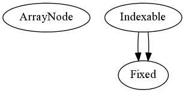

Blaze
Blaze
Tables¶

The toplevel modules containing the core Blaze datastructures.
- Indexable
- NDArray
- NDTable
- Table
- Array
- class blaze.table.Array(obj, dshape=None, metadata=None, layout=None, params=None)¶
Manifest array, does not create a graph. Forces evaluation on every call.
Parameters : obj : A list of byte providers, other NDTables or a Python object. Methods
- backends¶
The storage backends that make up the space behind the Array.
- datashape¶
Type deconstructor
- size¶
Size of the Array.
- class blaze.table.Indexable¶
The top abstraction in the Blaze class hierarchy.
An index is a mapping from a domain specification to a collection of byte or subtables. Indexable objects can be sliced/getitemed to return some other object in the Blaze system.
Methods
- global_id()¶
Get a unique global id for this source
- query(query_expr)¶
Queries this object and produces a view or an actual copy of data (or a deferred eval object which can produce those). A query is typically a value-dependent streaming operation and produces an indeterminate number of return values.
- returntype()¶
Returns the most efficient/general Data Descriptor this object can return. Returns a value from the list the values defined in DataDescriptor.desctype: “buflist”, “buffer”, “streamlist”, or “stream”.
- slice(slice_obj)¶
Extracts a subset of values from this object. If there is no inner dimension, then this should return a scalar. Slicing typically preserves the data parallelism of the slicee, and the index-space transform is computable in constant time.
- take(indices, unique=None)¶
Returns a view or copy of the indicated data. Indices can be another Indexable or a Python iterable. If unique if True, then implies that no indices are duplicated; if False, then implies that there are definitely duplicates. If None, then no assumptions can be made about the indices.
take() differs from slice() in that indices may be duplicated.
- class blaze.table.NDArray(obj, dshape=None, metadata=None, layout=None, params=None)¶
Deferred array, operations on this array create a graph built around an ArrayNode.
Methods
- backends¶
The storage backends that make up the space behind the Array.
- datashape¶
Type deconstructor
- size¶
Size of the NDArray.
- class blaze.table.NDTable(obj, dshape=None, metadata=None, layout=None, params=None)¶
The base NDTable. Indexable contains the indexing logic for how to access elements, while ArrayNode contains the graph related logic for building expression trees with this table as an element.
Methods
- backends¶
The storage backends that make up the space behind the Array.
- datashape¶
Type deconstructor
- size¶
Size of the NDTable.